Flamengo
Clube atual
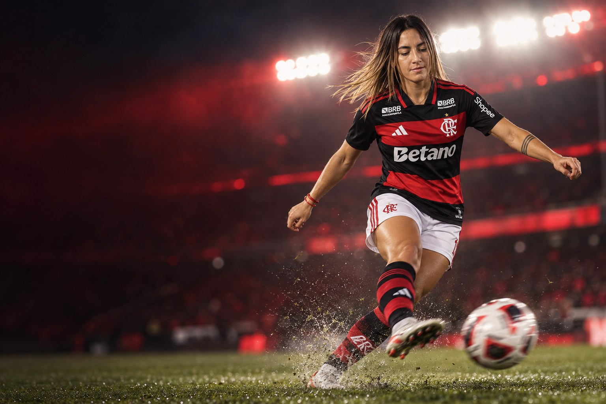
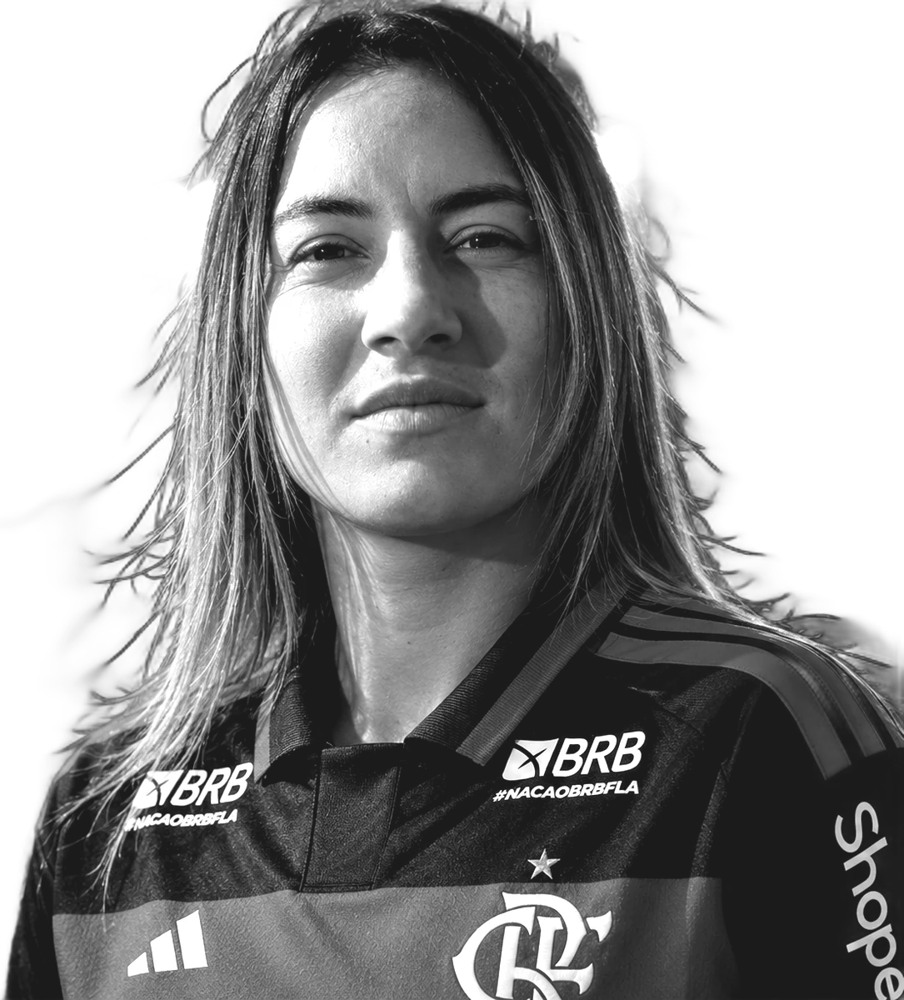
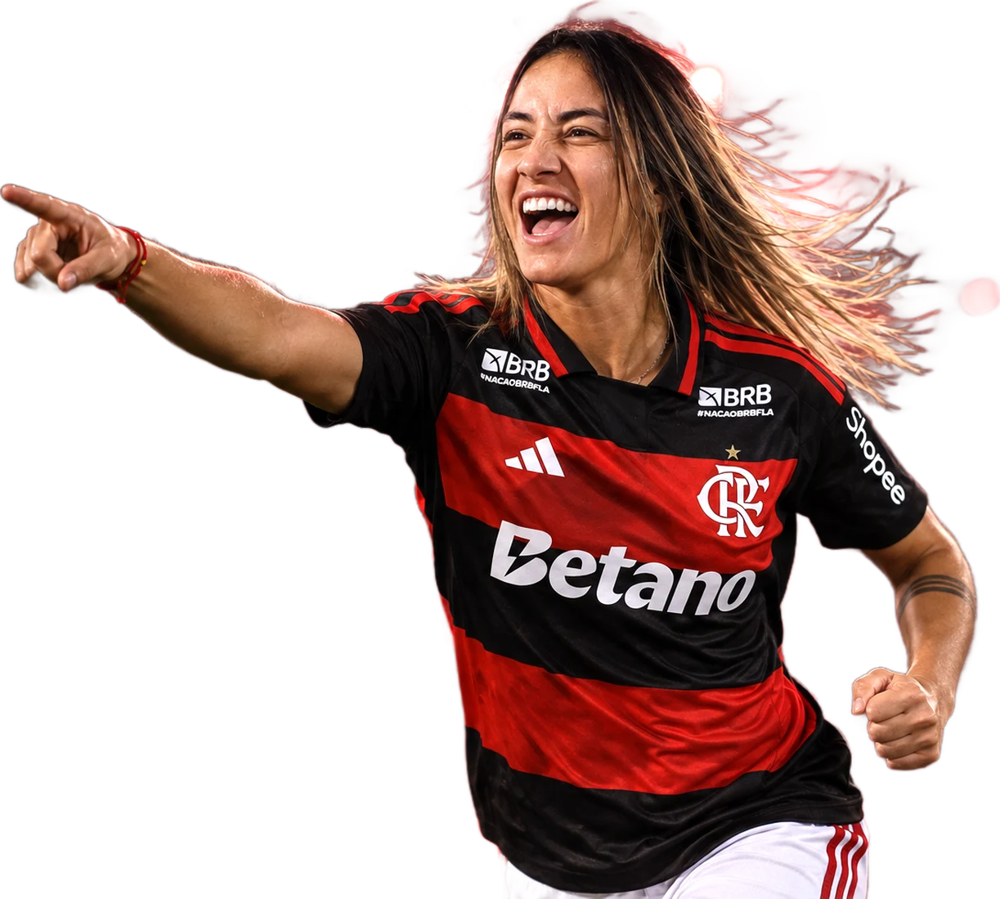
Futebolista profissional · Atacante
Celsa Fabiola Sandoval Barrientos
“Nunca me rindo, no me doy por vencida.”
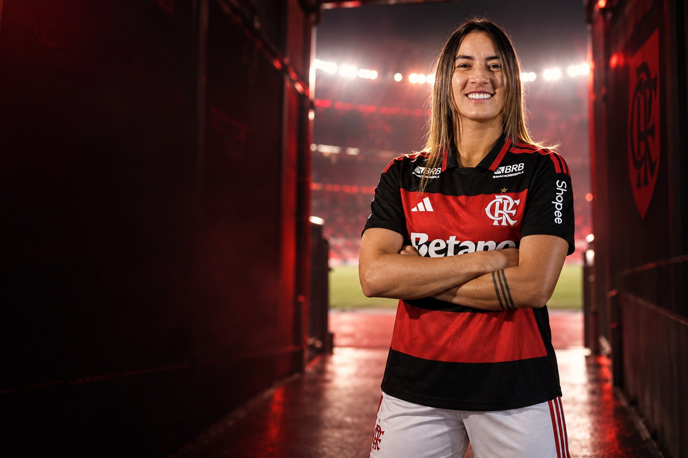
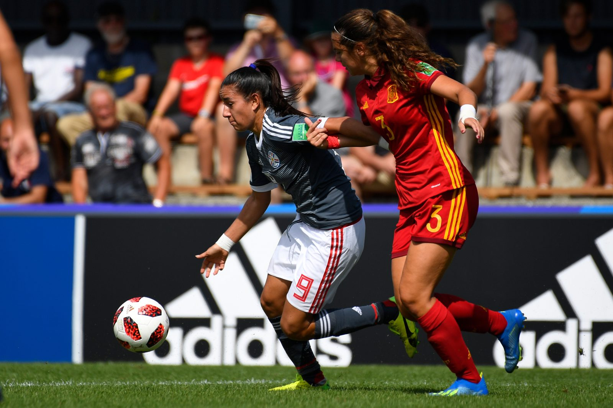
Sobre
Celsa Fabiola Sandoval Barrientos é futebolista profissional e atua como centroavante e meia esquerda. Clube atual: Flamengo. Seleção: Paraguai.
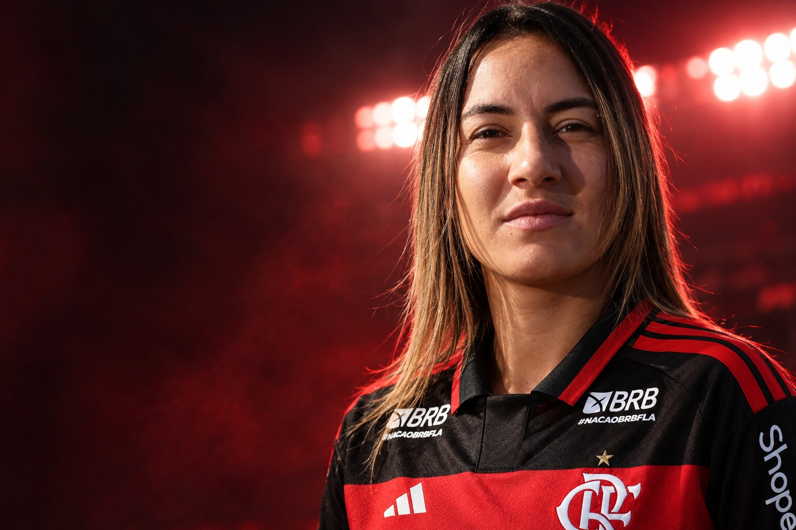
“Nunca me rindo, no me doy por vencida.”Fabiola Sandoval, à FIFA, no Mundial Sub-20 de 2018
Perfil
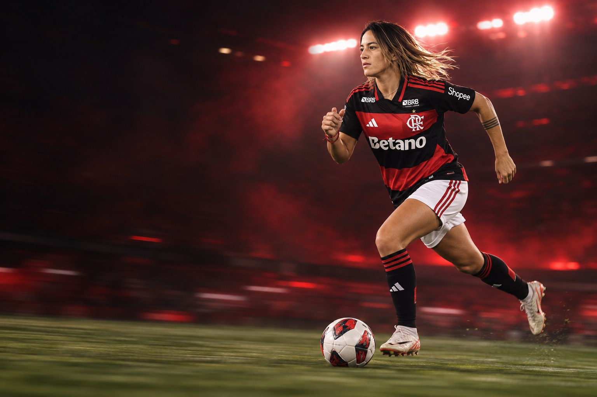
Carreira em números
Números
Carreira
Clubes em destaque
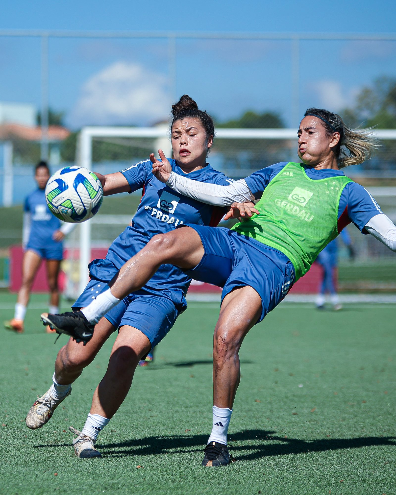

21 jogos · 7 gols
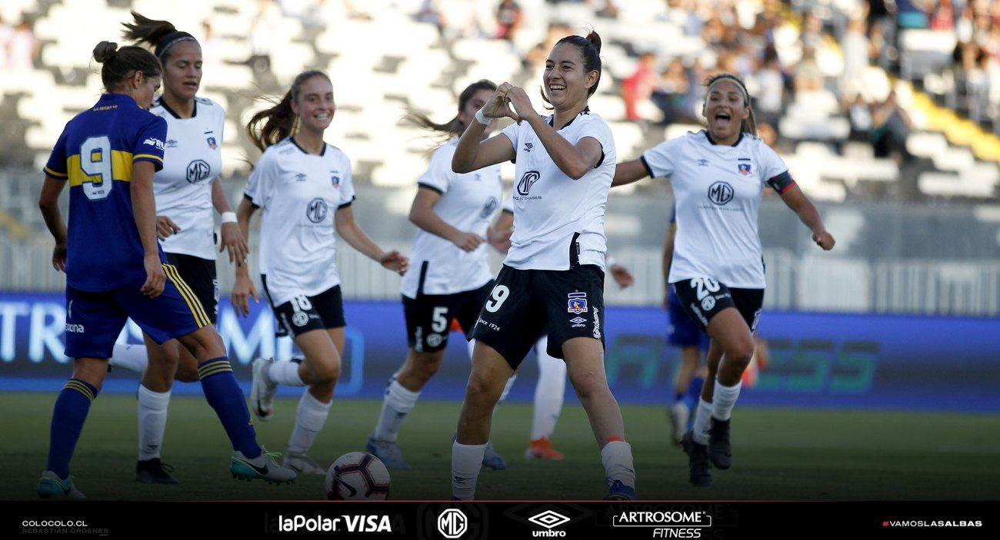
1 jogos · 0 gols
Conquistas
Galeria
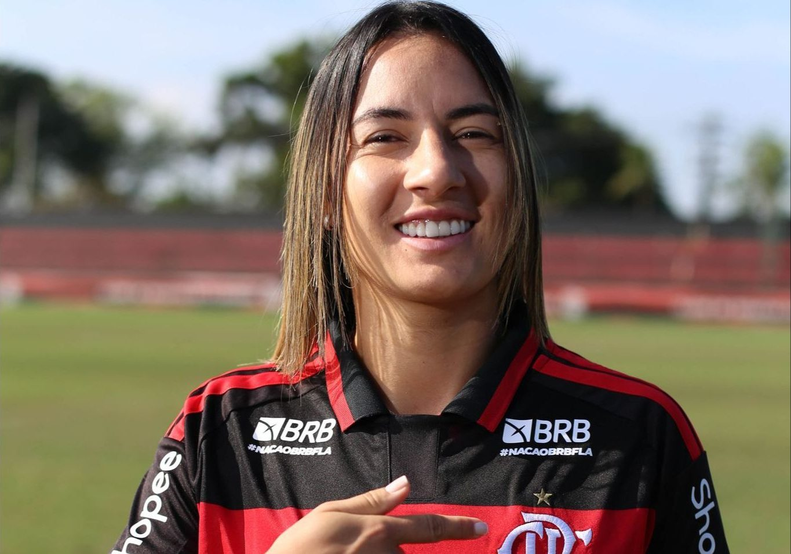
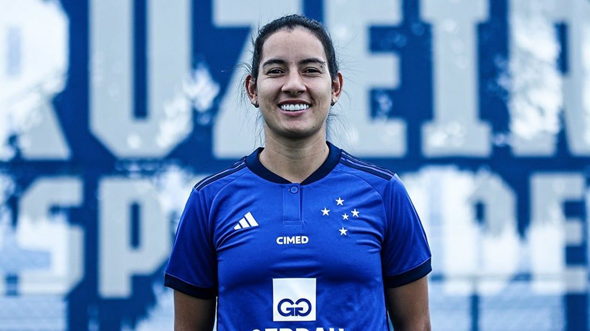
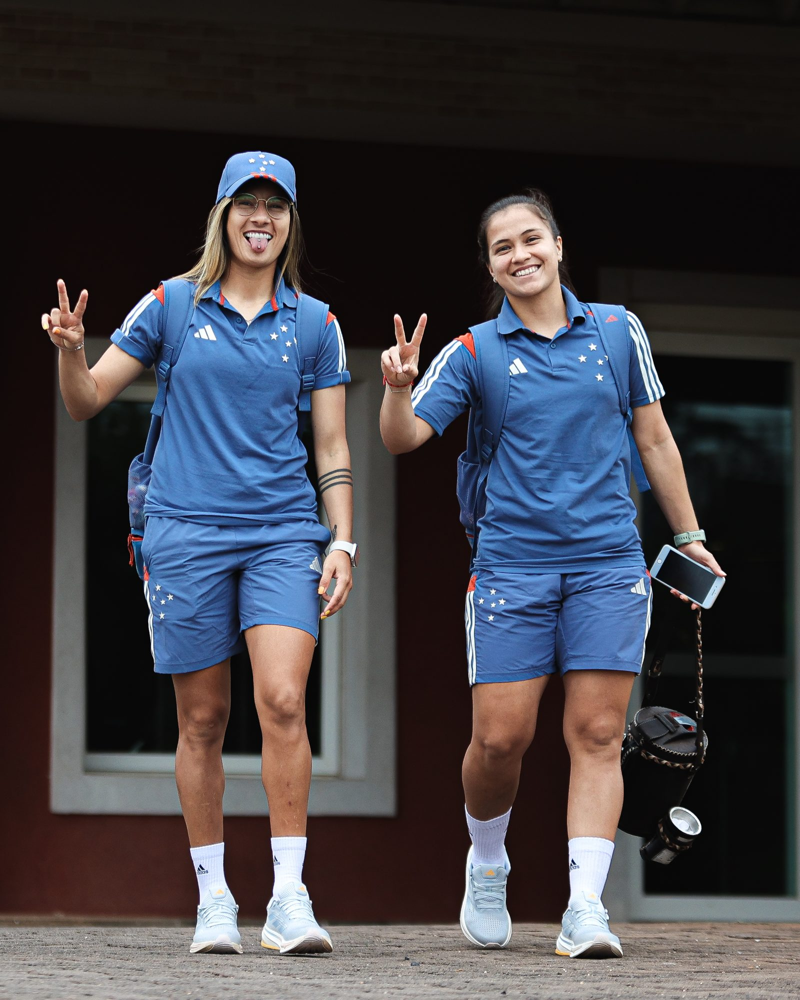
Currículo esportivo
| Temporada | Clube | País | Jogos | Gols | Assistências |
|---|---|---|---|---|---|
| 2026 | – | – | – | – | |
| 2025 | 1 | 0 | 0 | ||
| 2024 | 20 | 7 | 4 | ||
| 2023 | 29 | 4 | 2 | ||
| 2022 | Avaí/Kindermann | 11 | 8 | 0 | |
| 2021 | 6 | 1 | 0 | ||
| 2021 | Libertad | – | – | – | |
| 2020 | Libertad | 3 | 1 | 0 | |
| 2020 | Colo-Colo | Chile | 1 | 0 | 0 |
| 2019 | 3 | 0 | 1 | ||
| 2019 | Libertad | – | – | – | |
| 2018 | Sportivo Luqueño | 1 | 0 | 0 | |
| 2018 | – | – | – | ||
| 2017 | 3 | 0 | 0 | ||
| 2016 | – | – | – |
Jogos, gols e assistências conforme a base estatística Ogol. O clube atual segue o anúncio oficial do clube.
Na mídia
Contato profissional
Assuntos profissionais, comerciais e de carreira: fale pelo perfil oficial da atleta.
Mídia kit
International profile